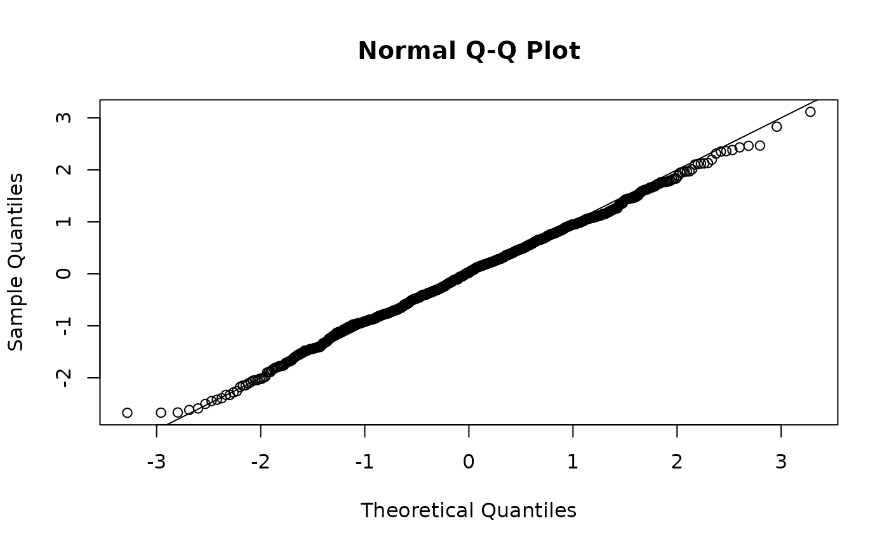
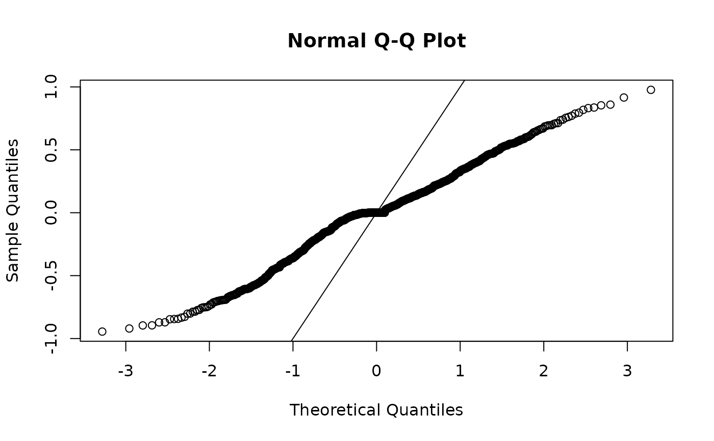
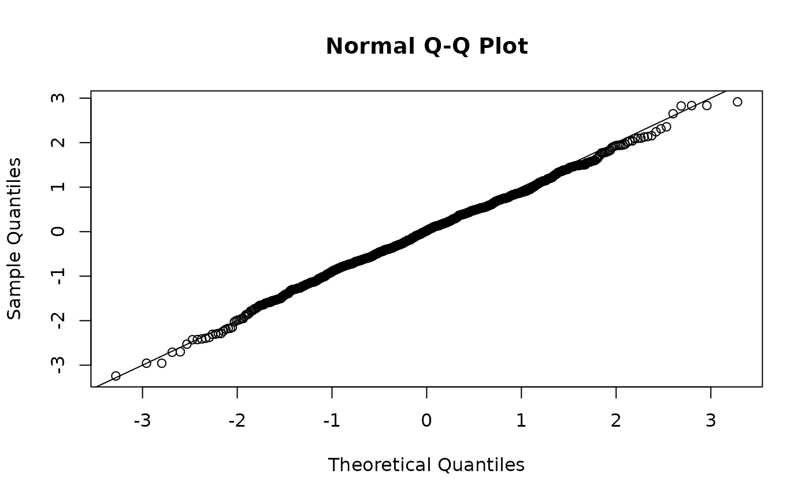
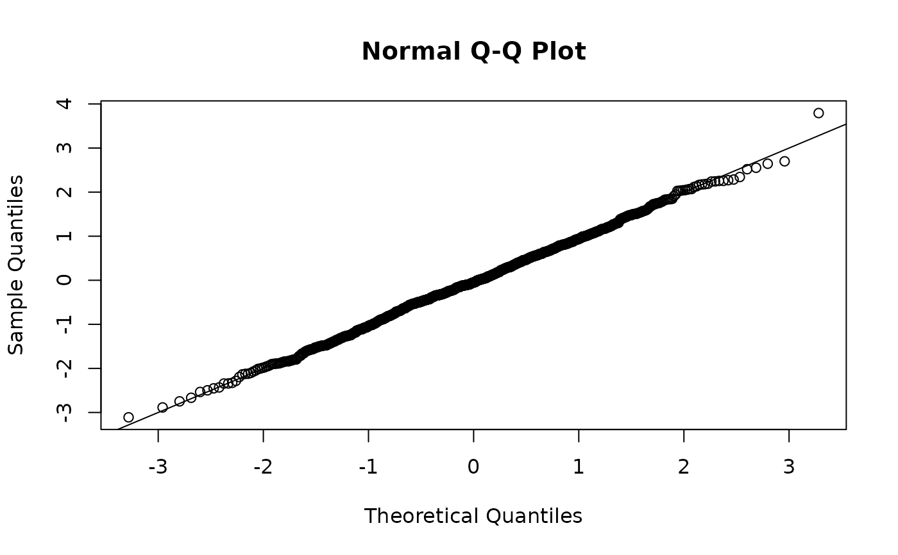

See the residual-checking vignette: browseVignettes("sdmTMB") or on the documentation site.
See notes about types of residuals in 'Details' section below.
Arguments
- object
An
sdmTMB()model.- type
Residual type. See details.
- model
Which delta/hurdle model component?
- mcmc_samples
A vector of MCMC samples of the linear predictor in link space. See the
predict_mle_mcmc()function in the sdmTMBextra package.- qres_func
A custom quantile residuals function. Function should take the arguments
object, y, mu, ...and return a vector of lengthlength(y).- ...
Passed to custom
qres_funcfunction. Unused.
Value
A vector of residuals. Note that randomization from any single random effect posterior sample and from any randomized quantile routines will result in different residuals with each call. It is suggested to set a randomization seed and to not go "fishing" for the perfect residuals or to present all inspected residuals.
Details
Randomized quantile residuals:
mle-mvn, mle-eb, and mle-mcmc are all implementations of
randomized quantile residuals (Dunn & Smyth 1996), which are also known as
probability integral transform (PIT) residuals (Smith 1985). If the data are
consistent with model assumptions, these residuals should be distributed as
normal(0, 1). Randomization is added to account for integer or binary
response observations. For example, for a Poisson observation likelihood with
observations y and mean predictions mu, we would create randomized
quantile residuals as:
Types of residuals:
Acronyms:
EB: Empirical Bayes
MCMC: Markov chain Monte Carlo
MLE: Maximum Likelihood Estimate
MVN: Multivariate normal
mle-mvn: Fixed effects are held at their MLEs and random effects are
taken from a single approximate posterior sample. The "approximate" part
refers to the sample being taken from the random effects' assumed MVN
distribution. In practice, the sample is obtained based on the mode and
Hessian of the random effects taking advantage of sparsity in the Hessian for
computational efficiency. This sample is taken with obj$MC(), where obj
is the TMB object created with TMB::MakeADFun(). See Waagepetersen
(2006) and the description in the source code for the internal TMB
function TMB:::oneSamplePosterior(). Residuals are converted to randomized
quantile residuals as described above.
mle-eb: Fixed effects are held at their MLEs and random effects are
taken as their EB estimates. These used to be the default residuals in
sdmTMB (and were called mle-laplace). They are available for
backwards compatibility and for research purposes but they are not
recommended for checking goodness of fit. Residuals are converted to
randomized quantile residuals as described above.
mle-mcmc: Fixed effects are held at their MLEs and random effects are
taken from a single posterior sample obtained with MCMC. These are an
excellent option since they make no assumption about the distribution of the
random effects (compared to the mle-mvn option) but can be slow to obtain.
See Waagepetersen (2006) and Thygesen et al. (2017). Residuals are converted
to randomized quantile residuals as described above.
See the sdmTMBextra
package for the function predict_mle_mcmc(), which can generate the MCMC
samples to pass to the mcmc_samples argument. Ideally MCMC is run until
convergence and then the last iteration can be used for residuals.
The defaults may not be sufficient for many models.
response: These are simple observed minus predicted residuals.
pearson: These are Pearson residuals: response residuals scaled by the
standard deviation. If weights are present, the residuals are then
multiplied by sqrt(weights).
References
Dunn, P.K. & Smyth, G.K. (1996). Randomized Quantile Residuals. Journal of Computational and Graphical Statistics, 5, 236–244.
Smith, J.Q. (1985). Diagnostic checks of non-standard time series models. Journal of Forecasting, 4, 283–291.
Waagepetersen, R. (2006). A simulation-based goodness-of-fit test for random effects in generalized linear mixed models. Scandinavian Journal of Statistics, 33(4), 721-731.
Thygesen, U.H., Albertsen, C.M., Berg, C.W., Kristensen, K., and Nielsen, A. 2017. Validation of ecological state space models using the Laplace approximation. Environ Ecol Stat 24(2): 317–339. doi:10.1007/s10651-017-0372-4
Rufener, M.-C., Kristensen, K., Nielsen, J.R., and Bastardie, F. 2021. Bridging the gap between commercial fisheries and survey data to model the spatiotemporal dynamics of marine species. Ecological Applications. e02453. doi:10.1002/eap.2453
Examples
mesh <- make_mesh(pcod_2011, c("X", "Y"), cutoff = 10)
fit <- sdmTMB(
present ~ as.factor(year) + poly(depth, 2),
data = pcod_2011, mesh = mesh,
family = binomial()
)
# the default "mle-mvn" residuals use fixed effects at their MLE and a
# single sample from the approximate random effect posterior:
set.seed(9283)
r <- residuals(fit, type = "mle-mvn")
qqnorm(r)
abline(0, 1)

# response residuals will be not be normally distributed unless
# the family is Gaussian:
r <- residuals(fit, type = "response")
qqnorm(r)
abline(0, 1)

# "mle-eb" are quick but are not expected to be N(0, 1); not recommended:
set.seed(2321)
r <- residuals(fit, type = "mle-eb")
qqnorm(r)
abline(0, 1)

# see also "mle-mcmc" residuals with the help of the sdmTMBextra package
# we can fake them here by taking a single sample from the joint precision
# matrix and pretending they are MCMC samples:
set.seed(82728)
p <- predict(fit, nsim = 1) # pretend these are from sdmTMBextra::predict_mle_mcmc()
r <- residuals(fit, mcmc_samples = p)
#> Note what used to be the default sdmTMB residuals (before version 0.4.3.9005)
#> are now `type = 'mle-eb'`. We recommend using the current default `'mle-mvn'`,
#> which takes one sample from the approximate posterior of the random effects or
#> `dharma_residuals()` using a similar approach.
qqnorm(r)
abline(0, 1)
